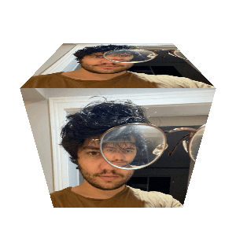
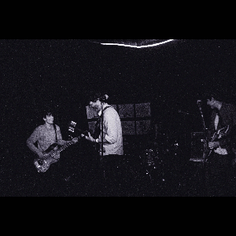

leo ereno
Oiee, bem-vinde ao meu site! Por aqui eu tagarelo e falo um pouco sobre o meu trabalho.

Antes de qualquer coisa, sou músico -- sinto que todo o resto que faço é um complemento ou um facilitador disso.
Meu projeto principal é a campolargo, banda com a qual escrevo e toco com colegas queridos desde 2023.

Também tenho um projeto solo, com o qual exploro tudo o que dá na telha, sem me preocupar muito em me prender a um gênero ou conceito específico.
Se preferir, tem uma playlist pronta com todos os meus trampos.
No dia a dia trabalho como dev fullstack. Minhas especialidades são .NET e Node.js, atuando com diversos frameworks em cada uma das linguagens.
Posto todos os meus projetos pessoais de estudo em meu Github.
As vezes escrevo algumas coisas como poemas, devaneios, crônicas e coberturas.